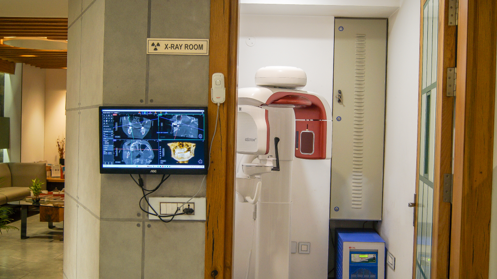

Technology, Safety & Sterilization.
From digital diagnostics to hospital-grade sterilization, every system at Anand Dental Clinic is chosen to make your treatment more precise, more comfortable and safer.
3
Class-B autoclaves
Digital
Low-dose imaging
5
Private operatories
See the Whole Picture Before Treatment Begins.
Accurate diagnosis comes first. Our in-house digital imaging lets your dentist show you exactly what they see and plan your treatment with you, often in the same visit.
- radiology
3D CBCT & panoramic (OPG) imaging
Our Osstem CBCT and OPG system offers multiple fields of view and resolution down to about 50 microns, with low-dose protocols (including for children) and structural lead shielding. The smallest appropriate field, the appropriate dose.
- photo_camera
Intraoral camera
Close-up images of individual teeth so you can see cracks, wear or decay for yourself, alongside Carestream digital RVG radiographs viewed chairside.
- view_in_ar
Computer-guided implant planning
Implant placement is planned digitally before surgery, for greater precision.
- mood
Digital Smile Design
A preview of your planned smile before any cosmetic work begins.

Technology That Makes Treatment Gentler.
The right equipment helps treatment feel more comfortable, take less time and last longer.
Rotary endodontics & digital apex locator
High-end Dentsply endodontic motor systems and digital apex locators for efficient, accurate root canal cleaning, often in a single visit when the tooth allows.
Root canal treatmentarrow_forwardDental laser
Gentle soft-tissue and gum treatments with less discomfort.
Laser & gum carearrow_forwardPiezoelectric ultrasonic scaling
Comfortable plaque and tartar removal that is gentle on gums and enamel.
Preventive carearrow_forwardCAD/CAM zirconia & E-max
Crowns, bridges and veneers digitally designed and milled in-house, made to match your natural teeth.
Smile design & veneersarrow_forwardFibre-optic handpieces
Bright light right at the working tip, for clearer, more careful treatment.
Restorative carearrow_forwardDigital records & archiving
Radiographs, photographs and treatment notes sit on a secure, server-backed system shared across operatories, so your history is always at hand.
Conscious sedation
For appropriately selected patients and procedures, sedation helps anxious patients relax while remaining responsive.
Medical-grade compressed air
Every chair is fed by a centralised air-compressor system, giving a consistent, controlled air supply across the operatories.
3D printing
Two dedicated 3D printers produce dental models, guides and provisional restorations quickly.
From Scan to Finished Restoration, Under One Roof.
Much of the digital workflow is controlled inside the clinic, giving greater control over precision, turnaround and quality.
Digital design
A high-end exocad workstation designs each prosthesis to the individual clinical requirement.
5-axis milling
ARUM 400 and 450 series 5-axis mills for precise milling of a broad range of dental materials.
Sintering & characterisation
Sintering and glazing furnaces, an anodizing system and a light-curing chamber for strength, finish and aesthetics.
Workflow
Scan → Plan → Design → Mill / Print → Sinter → Characterise → Finish → Deliver
Materials supported include flexible denture materials, titanium blanks, multilayer PMMA, PEEK and multilayer zirconia, depending on the clinical indication.
Safety You Can Rely On.
Infection control is never a compromise. Every reusable instrument follows this controlled sequence between patients, and is inspected throughout before release for clinical use.
- Step 01cleaning_services
Clean
Manual cleaning and debridement removes debris from every used instrument.
- Step 02science
Disinfect
Cold disinfection follows manual cleaning.
- Step 03waves
Ultrasonic clean
Ultrasonic cleaning reaches fine surfaces and joints.
- Step 04air
Dry
Instruments are thoroughly dried before packing.
- Step 05inventory_2
Pouch
Each instrument is individually pouched and sealed.
- Step 06sanitizer
Steam sterilize
Sealed pouches are sterilized in a Class-B vacuum autoclave.
Our Safety Commitments
Questions about our hygiene practices are always welcome. Read the safety FAQs.
- check_circleThree Class-B vacuum autoclaves, with cycles from about 10 minutes to 1 hour
- check_circleEvery instrument individually pouched and steam sterilized before use
- check_circleDaily spore testing and independent sterilization audits
- check_circleFour-tier infection barrier protocols
- check_circleHospital-grade air filtration in the operatories
A Clinic Designed for Calm.
Natural wood, warm light and private rooms: closer to a boutique hotel than a clinic.

Private operatories
Five private operatories mean unhurried, one-to-one attention.

Ergonomic comfort
Supportive chairs and sound-buffered rooms keep longer visits relaxed.

Reception lounge
Live greenery, soft lighting and instrumental music, with books, magazines and a bean-to-cup coffee and tea corner.
Purify What We Use. Reuse What We Can. Waste Less.
Advanced healthcare should also be responsible healthcare.
Purified water, reused
Every chair uses multi-stage RO-purified water. RO reject water is collected separately and reused for gardening and selected cleaning.
Suction-waste management
An in-house suction-waste management and disposal system gives greater control over waste from dental procedures.
Uninterrupted comfort and care
Air-purification systems and complete power-backup infrastructure keep essential clinical and comfort systems running during power cuts.
Experience it for yourself.
Book a consultation and see the clinic, the technology and the team first-hand.